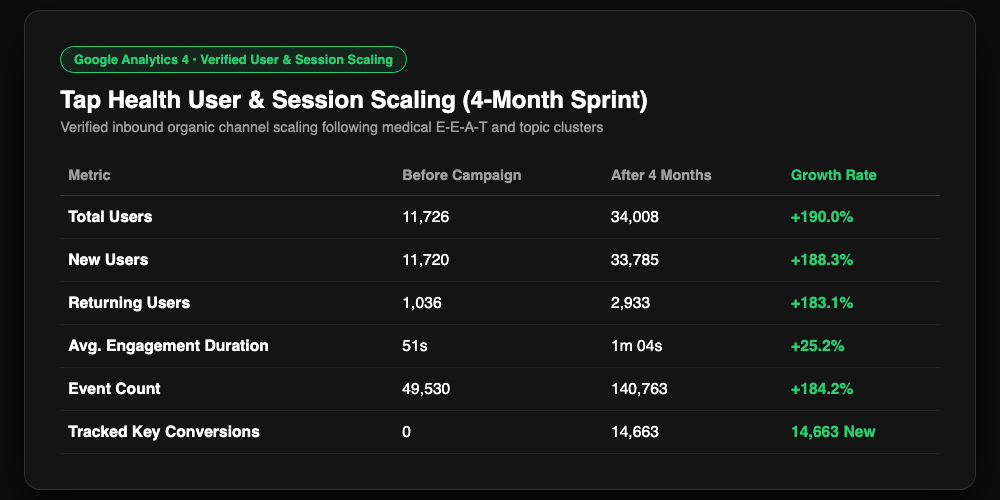
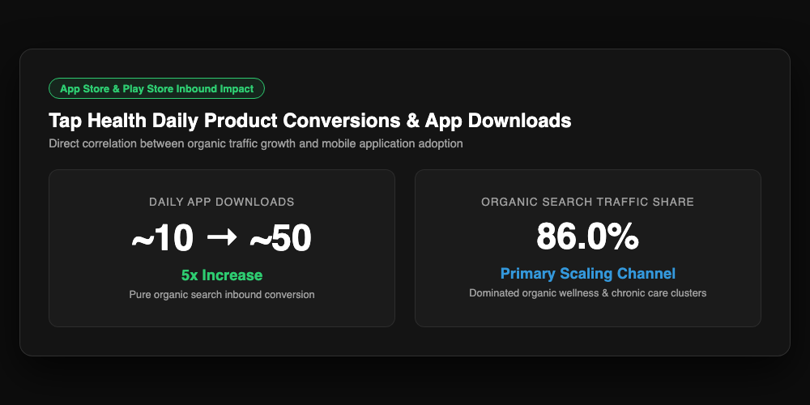

What Was the Outcome
1. Google Analytics 4 Performance
Organic Growth Engine
Within 4 months of launching the campaign, search organic acquisition became the primary scaling mechanism.
Verified User & Session Scaling
| Metric | Before | After | Growth |
|---|---|---|---|
| Total Users | 11,726 | 34,008 | +190.0% |
| New Users | 11,720 | 33,785 | +188.3% |
| Returning Users | 1,036 | 2,933 | +183.1% |
| Avg. Engagement | 51s | 1m 04s | +25.2% |
| Event Count | 49,530 | 140,763 | +184.2% |
| Key Conversions | 0 | 14,663 | New |
Engagement Surge
Average Engagement / User
Driven by UI/UX redesigns and sticky content strategies
Product Conversion
Daily Organic App Downloads
5x growth achieved purely through inbound channel scaling
Before vs After Comparison
Before Execution
- ✖ Weak, non-engaging website UI/UX layout
- ✖ Zero clear CTA hooks to guide conversion paths
- ✖ Missing medical E-E-A-T and doctor trust symbols
- ✖ Lacked keyword mapped content structures
- ✖ Google unrecognized topical authority clusters
- ✖ Zero off-page, PR, or community footprint
After 4 Months
- ✔ Premium, dynamic engaging UI/UX design (+25% dwell time)
- ✔ Clear contextual CTAs driving 14,663 conversions
- ✔ Strong doctor-reviewed and verified E-E-A-T schemas
- ✔ Consistent search intent mapped nutrition/diabetes cluster
- ✔ Dominant medical authority ranking positions
- ✔ Healthy PR mentions and active community presence
What I Had
Tap Health possessed a strong, AI-powered chronic care health platform but lacked search engine visibility and conversion pathways needed to grow organically.
- ✖ Poor UI/UX: Layout wasn't built for engagement, leading to visitors exiting early
- ✖ No Clear CTAs: Lacked conversion paths to guide users toward downloading the app
- ✖ No E-E-A-T Signals: Critical trust signals missing for Google's medical YMYL guidelines
- ✖ No Content Strategy: Lacked intent-based keyword mapping and structural publishing loops
- ✖ No Topical Authority: Lacked clusters demonstrating credibility on diabetes & nutrition
- ✖ Zero Authority Building: Minimal off-page activity, community presence, or PR
Despite a solid product, search engines and users lacked signals to trust and download Tap Health's solutions.
What I Did
1. Content Marketing & Topical Authority
Mapped and built extensive content clusters targeting nutrition and diabetes-related queries to align with their core target audience.
👉 Focus: medical relevance and solution intent
Targeted low-competition, high-volume search phrases to capture search rankings fast and trigger early compounding traffic.
Implemented a robust, calendar-backed content engine matching semantic structures search engines trust.
2. On-Page & UI/UX Optimization
Redesigned primary layouts to keep users engaged. Embedded clear, context-aware CTAs to frictionlessly transition web readers into mobile app downloads.
👉 Result: Substantially increased dwell time and click-throughs
3. Medical E-E-A-T & Trust Implementation
Added verified physician review bios, scientific references, transparent editorial guidelines, and strict author schemas to fulfill Google's rigorous YMYL standards.
👉 Result: Enhanced algorithmic and human credibility
4. Off-Page Branding & Community Presence
Acquired high-quality PR features and brand citations across reputable platforms. Built conversational trust loops and answered real user questions on Reddit, Quora, and targeted patient forums to scale organic entities.
👉 Result: Strengthened brand authority signals and non-branded search associations